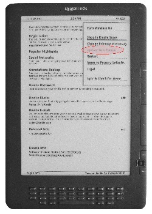

《Kindle 2 及 Kindle DX ( DXG ) 的中文化》Sai Lee
2012/2/10 (2012/4/7 更新 - 加上六個備份下載)
目前市面上電子書閱讀器有多種選擇。除手機及平板電腦 ( Tablet PC ) 外，以Kindle 及 Barnes & Noble 的 nook 最為普遍。要閱讀中文電子書，兩者皆為不錯的選擇。
Amazon 的Kindle 目前已有多種型號。包括：Kindle 1 ( 最早期型號 )、Kindle 2、Kindle DX ( 9.7”大屏膜 )、Kindle DX Graphite ( 也是9.7” 大屏膜，而且使用較新的E-Ink Pearl 屏膜，反差較大，圖文更為清晰 )、Kindle 3、Kindle 4 及Kindle Touch 等各種型號。 最近推出的 Kindle Fire 是平板電腦而並非專用電子書閱讀器。以閱讀電子書而言，後者較為理想。因為電子書閱讀器的屏膜是電子墨水 ( Electronic Ink 或稱電子紙張 Electronic Paper )。其特點是：
- 不會閃爍。電腦所用的瑩光屏每秒閃爍 60 -75 次，容易使眼睛疲勞。
- 不會像瑩光屏那樣發光而只是反光，所以不會刺眼。看上去就像看傳統的印刷書籍一樣舒服。
- 非常省電，只有翻頁時才會較耗電，靜止時消耗電很少。以 Kindle 及Kindle Fire為例作比較，前者一般使用情況下充電一次，可以維持三至四星期。而Kindle Fire 只能持續七、八小時。不過目前電子墨水屏膜只有黑白顯示。彩色的電子墨水屏膜雖已研究成功，但尚未商品化推出市面。
在Kindle 的諸多型號中，Kindle 3 以後的都可以開箱後直接看中文的 Mobi、Doc.、TXT、 Prc、PDF 等格式的電子書，( ePub 格式可以用 Calibre 轉為 Ｍobi格式後閱讀 ) 中文檔案/書名也能正確顯示。但是Kindle 1、2、DX、DXG 等型號，卻無法直接閱讀中文， 連中文檔案/書名也無法顯示。 要用來看中文的電子書， 就只能把書轉成 PDF 格式來看。 但是PDF 格式是不能把字體放大的，只能整頁放大。放大後就無法看到整頁，只能看到一部份，不太實際。 早期買了這些型號的朋友，可能會覺得有些懊腦。而Kindle DX 是市面上僅有的兩、三種大屏膜的閱讀器，如果老人家眼睛不好，必須要大屏膜的也就別無選擇了。
幸好經過一些網友的努力，已經突破了這層障礙，可以把Kindle 2 及 DX ( DXG ) 改成跟新型號的Kindle 一樣可以閱讀中文。而且效果很好（Kindle 1 則因型號太舊，下述的中文化方法並不適用）。 而更改並不特別困難。只要對電腦操作有信心， 小心按步就班進行，不必十分鐘就能完成，可以安然享受中文的閱讀。不過，任何操作都可能會有一些風險，雖然這個操作筆者曾多次嘗試而從未失敗過，但並不排除操作不慎而引起閱讀器“變磚”(完全僵化不動) 的可能性。所以使用者必須小心操作，並自負一切可能的後果責任。
把Kindle 2 及 DX ( DXG ) 中文化基本上有兩種辦法：
(一) 在原有的Kindle 作業系統 (Operating System) 上， 並行加裝一套大陸網民開發的“多看”作業系統。把Kindle 變成雙重開機。當以“多看”系統開機後，就可以閱讀中文。 轉成原有系統開機時，又可以變成原有的Kindle 使用。 而且“多看”系統功能比原系統還多。讀者有興趣的話，可以上這個網站去研究 : http://bbs,duokan,com/forum/
不過“多看”系統似乎還未能十分穩定 (近期有所改進)，並且安裝後耗電量增加不少。筆者嘗試安裝之後，電池變成只能維持一星期左右。而且如果不及時充電，系統就會”當機”不動。即使立刻插上代電源也不能馬上使用。必須再充電大半天才能重新開機。
(二)
把原有的Kindle 作業系統解鎖，加入中文字型，即可閱讀中文。這是本文討論的重點。所以整個操作分成兩部份 :
1. 系統解鎖 ( 網友戲稱為逃獄 jailbreaking )
2. 加入及更改字型 ( fonts hacking )
以下是該項操作的詳細說明。為了照顧一些對電腦並不十分專業的朋友，所以說明得比較仔細，務使大多數人都能運用成功。可能有些朋友會覺得太嚕嗦，敬請原諒。
I. 認識你的 Kindles：
首先必須弄清楚你的Kindle 屬於那一版本類型，因為不同類型要用到不同的檔案去操作。
|
|
| Kindle 2 |
Kindle DX ( & DXG ) |
在這兩種型號中，又分為美國版及國際版。 所以總共有五、六種不同版本。 在以下的討論中，將使用下列代號表示不同的版本 :
k2 = Kindle 2 美國版 ( 背面序號前四碼為 B002 )
k2i = Kindle 2國際版 ( 背面序號前四碼為 B003 )
dx = Kindle DX美國版 ( 背面序號前四碼為 B004 )
dxi = Kindle DX國際版 ( 背面序號前四碼為 B005 )
dxg = Kindle DX ( Graphite ) 美國版 ( 序號前四碼為 B009 )
dxgi = Kindle DX ( Graphite ) 國際版 ( 序號待查 )
要知道你的版本型號，Kindle 2 及Kindle DX 可翻到閱讀器的背後，可以看到一行小字，寫著 : Seial No。 B00?...................，其中 B00? 就是版本的代號。如上列所示，B002 就是Kindle 2美國版。
Kindle DX ( Graphite ) 的序號不寫在背後，必須開機進入書目頁，( 按 ”Home“ 鍵 )，再按 Menu 鍵一次，選擇 Setting，按選擇鍵，就會進入下一頁，如下圖所示。在這一頁的最下面一行，就是序號 ( Serial Number。 前四碼就是你的 Serial no. Prefix B00? )
|
|
| 先按“Home”鍵，進入書目的頁面 |
再按“Menu”進入下一頁；橢圓形範圍所示，就是 DXG的序號及版本代號
|
II. 下載必須的解鎖檔案：
首先必須感謝porkupan、 clarknova 、NiLuJe 、Yihan Lu、 Serge A. Levin 及許多先進，開發了這些工具程式，把原有的作業系統解鎖，使得中文化及一些其他的功能變更成為可能。讀者可以先按下列連結至“mobilread”網站下載一個壓縮檔：
kindle-jailbreak-0.10.N.zip (或 [
備份下載])
再用7-zip（註），或其他解壓縮工具如 winzip、winrar 等把它解壓縮之後， 會得到一大堆檔案如下圖所示：
請注意每一個 .bin 檔案都對應於一種不同的型號版本。例如:
update_jailbreak_0.5.1_dxg_install.bin 就對應於 Kindle DX Graphite ( 序號前四碼 B009 ) 的型號版本。而 xxxxx_install.bin 是用來解鎖用，xxxxx_uninstall.bin 則是用來恢復原狀，即取消解鎖。也就是說，如果因某種原因，你想要取消解鎖的操作，只要把xxxxx_uninstall.bin 代替xxxxx_install.bin 檔案，照下面描述的操作重作一次就可以了。
另外，在檔案中有一個README.txt 文字檔，內有簡單的使用說明，可以打開來參考。
III. 系統解鎖：
取得這些檔案以後，就可以把閱讀器與電腦用原廠提供的白色 USB 接線連接起來，大插頭一端插進 PC 的 USB 插口，小插頭一端插進閱讀器底端的微型USB 插口。幾分鐘後，閱讀器會顯示進入 USB 連線狀態 （USB Drive Mode）， 與此同時，當你打開 Windows Explorer檔案瀏覽器 ( 請注意: 並非 IE ) 瀏覽檔案的時候，會發現瀏覽器的左半在展開 Compute 這個項目之後，會多了一個名稱為 Kindle (? :) 的磁碟機，至於 ? 是什麼字母則視你原先有幾個磁碟機而定。在下圖的例子中則是 ( I :)
在確定連線成功之後，就可以把解壓縮後得到的，適當的檔案 (即與你的閱讀器相應的 xxxxxx_install.bin 檔案 ) 拷貝到 Kindle ( ? : ) 的根目 ( 即最上一層目錄 ) 去 :
拷貝完成後，就可以照正常程序按 safely remove hardware …的小圖按鈕，
移除 Kindle ( ? : ) 磁碟機，再拔掉 USB 接線。至此，第一部份操作已接近完成，只剩下閱讀器的幾步而已。
下一步是打開閱讀器，按 “Home” 鍵進入書目頁，再按 “Menu” 鍵彈出小窗口選項單，用 5-way selector 鍵上下撥動，直至 Setting 的選項被選定 ( Setting 出現底線 Underline )，再按一下選擇鍵進入下一頁的 Setting 頁 :
在 Setting 頁出現後再按一次“Menu”鍵，這時會彈出另一個
小窗口選項單 :
 |
 |
如果上述操作無誤，則會如上左圖所示，Update Your Kindle 這一選項是黑色的，如果上述操作有一些錯誤，或所拷貝的 .bin 檔案，與閱讀器的版本不符，則會如上右圖所示，Update Your Kindle 這一選項是灰色的，無法進行下去，須重新檢查每一步驟。如果一切無誤，那就可以選擇Update Your Kindle 這一項，按下選擇鍵，然後就會出現必須要重新開機 ( reboot ) 的訊息，在你認可同意後，就會自動關機重開。這過程約需2-3 分鐘。其間，會看到顯示出更新並
不成功 ( Update
not successful ) 的訊息。但不必驚疑，這是正常的。等重新開機完成，並穩定下來以後，第一部份，系統解鎖的操作，就已經完成了。但你不會察覺有任何的改變，直接進行第二部份變更字型的操作就是了。
IV. 下載及破解字型：
Kindle 的字型檔，是嵌在系統內的，無法直接去變更或取代，所以必須先把這內建的字型檔分離出來並予以取代。
1. 請按下列連結至“mobilread”網站下載英文字型破解備用：
kindle-fonts-4.9.N-k2.zip (或 [
備份下載])
這個壓縮檔解壓後可以得到以下字型破解檔：
把其中的 src 檔案夾展開, 你會看到以下的檔案及一個再下一層的檔案夾 linkfonts：（這個檔案夾的再下層有一個子檔案夾 fonts，裡面儲存的是三組字型 San、Mono 及 Serif。）
在這些字型破解檔中選擇相應於你閱讀器型號版本的一個，仿照前述（請參閱III. 系統解鎖）辦法，將閱讀器用 USB 線連接後, 把它拷貝到閱讀器的根目錄去。同時，也把展開 src 後得到的 linkfonts檔案夾一起拷貝過去。
V. 下載中文字型及用以置換英文字型：
請按下列連結至“多看”網站下載四個含中文字型的檔案備用：
free_font.part1.rar (或 [
備份下載])
free_font.part2.rar (或 [
備份下載])
free_font_bold.part1.rar (或 [
備份下載])
free_font_bold.part2.rar (或 [
備份下載])
把這四個檔案放在同一個檔案夾裡，用 7-zip 或 WinRar 解壓後，會得到兩種中文字型，即：free_font.ttf 及 free_font_bold.ttf 兩個檔案。（原來的四個壓縮檔案可以不要了，或放在一旁）。現在，要用這兩種中文字型去取代上面（IV. 下載及破解字型）一節裡所提到的其中兩種英文字型Serif_Regular 及 Serif_Bold。方法如下：
1. 先把上面兩種中文字型更名（rename）：
free_font.ttf 改成為 Serif_Regular,ttf；
free_font_bold.ttf 改成為Serif_Bold.ttf
2. 再次用 USB 線把閱讀器與 PC 連接起來。打開檔案瀏覽器，將Kindle （ J：) 項目展開，如下圖：
可以看見在 Kindle ( J: ) – linkfonts – fonts 這個檔案夾裡, 有許多 .ttf 的字型檔，其中有兩個是 Serif_Bold.ttf 及 Serif_Regular.ttf（檔案瀏覽器。右邊紅圈所示）。再把這兩個檔案更名（rename）為Serif_Bold.bak 及 Serif_Regular.bak 予以保存（檔案瀏覽器。右邊綠圈所示）。
3. 把上面 (1.) 中用 free_font、free_font_bold 更名後得到的Serif_Regular,ttf、Serif_Bold.ttf 檔拷貝到這個Kindle ( J: ) – linkfonts – fonts檔案夾裡。也就是用中文字型檔置換了原來的英文字型檔。
之後安全移除閱讀器並拔除USB 接線，打開閱讀器，按“Home”鍵，再按“Menu”鍵，選擇 Setting”，再按一次“Menu”鍵，在看到“Update”變成黑色的情況下，選擇並按下 “Update” 選項（以上基本上只是重複解鎖的操作，只是用不同的檔案拷貝到根目去）。閱讀器就又會重新開機，只是這一次你不會再看到錯誤訊息。重新開機後，就大功告成了。現在，你如果拷貝一些中文的 Mobi 檔案到閱讀器的 document 檔案夾去，就可以看到中文書名及內容的顯示了。
註：7-zip是一個免費軟件，可以在這個網址下載：
www.7-zip.org/download.html
2012/2/21 (Hugo Chen) (補遺) 如果祇修改Serif部分，Kindle標題仍會出現格子。
若將San_Bold也換成中文字型即可解決。
2012/2/23 (Sai Lee) (提醒) 置換字體之後, 必須重新開機 ( Restart ), 才會生效, 但不必 Update.